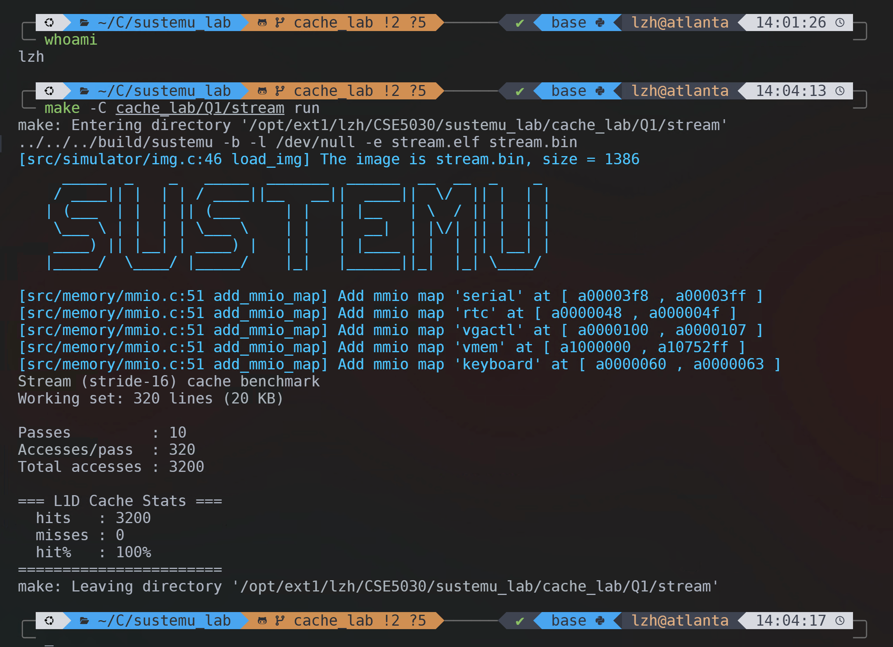

12532588 李子豪

| L1D_S | L1D Capacity | Hits | Misses | Hit Rate |
|---|---|---|---|---|
| 3 | 4 KB | 0 | 3200 | 0% |
| 4 | 8 KB | 0 | 3200 | 0% |
| 5 | 16 KB | 0 | 3200 | 0% |
| 6 | 32 KB | 3200 | 0 | 100% |
| 7 | 64 KB | 3200 | 0 | 100% |
| 8 | 128 KB | 3200 | 0 | 100% |
Q: At which L1D_S does the hit rate stop increasing? What does this tell you about the benchmark's working set?
A: 命中率在 L1D_S = 6（32 KB）时停止增加，并首次达到 100%，这说明该 benchmark 的 working set 大于 16 KB 但不超过 32 KB，与题目给出的 20 KB working set 一致；当缓存容量为 16 KB 及以下时无法容纳完整工作集，因此访问持续 miss，而当 L1D 增大到 32 KB 后工作集可以完整驻留在缓存中，所以命中率达到 100%，继续增大容量也不会再带来收益。
Q: What is the L2 hit rate? Given that all three matrices together (192 KB) fit within the 256 KB L2, explain this result.
A: ijk 版本的 L2 hit rate 为
99%，原因是虽然三个矩阵总大小 192 KB 小于
256 KB 的 L2 容量，整体上能够放入 L2，但单个矩阵
64 KB 已超过 32 KB 的 L1D 容量，因此
ijk 访存顺序会产生大量 L1D miss；不过这些 miss 大多仍然能在
L2 中命中，所以 L2 hit rate
依然维持在很高水平，少量未命中主要来自首次访问时的 cold miss。
修改文件： cache_lab/Q2/matmul.c
实现思路： 将循环顺序从 ijk 改为
ikj
for (i = 0; i < N; i++)
for (k = 0; k < N; k++)
for (j = 0; j < N; j++)
C[i][j] += A[i][k] * B[k][j];| Variant | L1D hit rate | L1D misses | L2 hit rate |
|---|---|---|---|
| ijk | 49% | 2133869 | 99% |
| reorder | 97% | 133249 | 99% |
A: 将循环顺序从 ijk 改为
ikj 后，B[k][j]
在最内层按行连续访问，空间局部性显著改善，因此 L1D hit rate 从
49% 提升到 97%，L1D misses 从
2133869 降到 133249；两种顺序的 L2 hit rate
都约为 99%，说明 loop reorder 的主要收益是减少 L1D
中由跨行访问带来的大量 miss，而不是改变 L2 的整体命中情况。
修改文件： src/memory/prefetch.c
实现代码：
paddr_t prefetch_hint(paddr_t addr)
{
return (addr & ~(BLOCK_SIZE - 1)) + BLOCK_SIZE;
}该实现先用 addr & ~(BLOCK_SIZE - 1) 将地址对齐到当前
cache block 起始位置，再加上 BLOCK_SIZE 返回下一个 block
的起始地址，从而在发生 L1D miss 时顺序预取后继块。
| Configuration | scan1 misses | scan2 misses | 改善 |
|---|---|---|---|
| No prefetch | 4099 | 4098 | - |
| Implemented | 1368 | 1367 | ↓ 66.6% |
A: 在没有 prefetch 时，顺序扫描几乎每个 block
的首次访问都会产生 miss，因此 scan1 和 scan2
的 miss 数都接近 4096；实现顺序预取后，访问当前 block
时会提前把下一个 block 载入缓存，使大量原本的 miss 变成 hit，所以
scan1 misses 降到 1368、scan2
misses 降到 1367，整体下降约
66.6%，说明该预取器对流式访问模式效果明显。